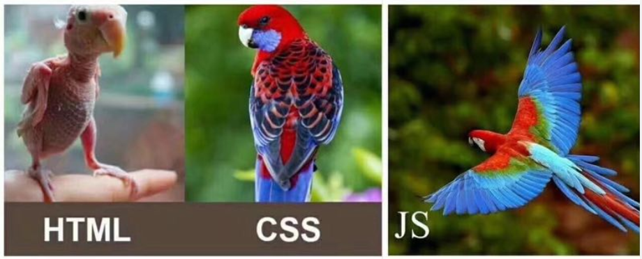

现在的互联网前端分三层：
HTML：超文本标记语言。从语义的角度描述页面结构。
CSS：层叠样式表。从审美的角度负责页面样式。
JS：JavaScript 。从交互的角度描述页面行为

CSS：Cascading Style Sheet，层叠样式表。CSS的作用就是给HTML页面标签添加各种样式，定义网页的显示效果。简单一句话：CSS将网页内容和显示样式进行分离，提高了显示功能。
接下来我们要讲一下为什么要使用CSS。
不能够适应多种设备
要求浏览器必须智能化足够庞大
数据和显示没有分开
功能不够强大
使数据和显示分开
降低网络流量
使整个网站视觉效果一致
使开发效率提高了（耦合性降低，一个人负责写html，一个人负责写css）
比如说，有一个样式需要在一百个页面上显示，如果是html来实现，那要写一百遍，现在有了css，只要写一遍。现在，html只提供数据和一些控件，完全交给css提供各种各样的样式。
<div>
<p style="color: green">我是一个段落</p>
</div><style type="text/css">
/*写我们的css代码*/
span{
color: yellow;
}
</style><link rel="stylesheet" href="./index.css"><style type="text/css">
@import url('./index.css');
</style> 标签选择器
类选择器
id选择器
标签选择器可以选中所有的标签元素，比如div，ul，li ，p等等，不管标签藏的多深，都能选中，选中的是所有的，而不是某一个，所以说 "共性" 而不是 ”特性“。
body{
color:gray;
font-size: 12px;
}
/*标签选择器*/
p{
color: red;
font-size: 20px;
}
span{
color: yellow;
}所谓类：就是class . class与id非常相似，任何的标签都可以加类，但是类是可以重复,属于归类的概念。同一个标签中可以携带多个类，用空格隔开。
类的使用，能够决定前端工程师的css水平到底有多牛逼？在这里一定要有”公共类“的概念。
.lv{
color: green;
}
.big{
font-size: 40px;
}
.line{
text-decoration: underline;
}html：
<!-- 公共类 共有的属性 -->
<div>
<p class="lv big">段落1</p>
<p class="lv line">段落2</p>
<p class="line big">段落3</p>
</div>同一个页面中id不能重复。
任何的标签都可以设置id ，id命名规范 要以字母 可以有数字 下划线 - 大小写严格区分 aa和AA是两个不一样的属性值。
#box{
background:green;
}
#s1{
color: red;
}
#s2{
font-size: 30px;
}html：
<body>
<div id="box">娃哈哈</div>
<div id="s1">爽歪歪</div>
<div id="s2">QQ星</div>
</body>后代选择器
子代选择器
并集选择器(组合选择器)
交集选择器
使用 空格 表示后代选择器。顾名思义，父元素的后代（包括儿子，孙子，重孙子）。
.container p{
color: red;
}
.container .item p{
color: yellow;
}使用 > 表示子代选择器。比如div>p,仅仅表示的是当前div元素选中的子代(不包含孙子....)元素p。
.container>p{
color: yellowgreen;
}多个选择器之间使用 逗号 隔开。表示选中的页面中的多个标签。一些共性的元素，可以使用并集选择器。
/*并集选择器*/
h3,a{
color: #008000;
text-decoration: none;
}使用 . 表示交集选择器。第一个标签必须是标签选择器，第二个标签必须是类选择器 语法：div.active
比如有一个<h4 class='active'></h4>这样的标签。那么它表示两者选中之后元素共有的特性。
h4{
width: 100px;
font-size: 14px;
}
.active{
color: red;
text-decoration: underline;
}
/* 交集选择器 */
h4.active{
background: #00BFFF;
}伪类选择器
伪标签选择器
属性选择器
伪类选择器一般会用在超链接a标签中，使用a标签的伪类选择器。
/*link表示没有被访问的a标签的样式*/
.box ul li.item1 a:link{
color: #666;
}
/*visited表示访问过后的a标签的样式*/
.box ul li.item2 a:visited{
color: yellow;
}
/*hover表示鼠标悬停时a标签的样式*/
.box ul li.item3 a:hover{
color: green;
}
/*active表示鼠标摁住的时候a标签的样式*/
.box ul li.item4 a:active{
color: yellowgreen;
}/*设置第一个首字母的样式*/
p:first-letter{
color: red;
font-size: 30px;
}
/* 在....之前 添加内容 这个属性使用不是很频繁 了解 使用此伪元素选择器一定要结合content属性*/
p:before{
content:'alex';
}
/*在....之后 添加内容，使用非常频繁 通常与咱们后面要讲到布局 有很大的关联（清除浮动）*/
p:after{
content:'&';
color: red;
font-size: 40px;
}属性选择器，字面意思就是根据标签中的属性，选中当前的标签。
/*根据for属性查找，找到所有又for属性的，设置字体颜色为红色*/
[for]{
color: red;
}
/*找到for属性的值等于username的元素 字体颜色设为黄色*/
[for='username']{
color: yellow;
}
/*以....开头^ */
[for^='user']{
color: #008000;
}
/*以....结尾$ */
[for$='vvip']{
color: red;
}
/*包含某元素的标签*/
[for*="vip"]{
color: #00BFFF;
}
/*指定标签的for属性
其中for属性的值是以空格隔开的值列表，
user1是值列表中的一个独立值*/
label[for~='user1']{
color: red;
}
input[type='text']{
background: red;
}有些时候我们可能会给同一个标签设置多个样式，遇到了重叠项的设置又该听谁的呢？这里就要用到选择器的权重。
行内样式 1000> id选择器 100 > 类选择器 10 > 标签选择器 1 > 继承样式 0
继承性：给父级设置一些属性，子级继承了父级的该属性，这就是我们的css中的继承。
面向对象语言都会存在继承的概念，在面向对象语言中，继承的特点：继承了父类的属性和方法。那么我们现在主要研究css，css就是在设置属性的。不会牵扯到方法的层面。
记住：有一些属性是可以继承下来 ： color 、 font-*、 text-*、line-* 。主要是文本级的标签元素。
但是像一些盒子元素属性，定位的元素（浮动，绝对定位，固定定位）不能继承。
层叠性：权重大的标签覆盖掉了权重小的标签，谁的权重大，浏览器就会显示谁的属性。